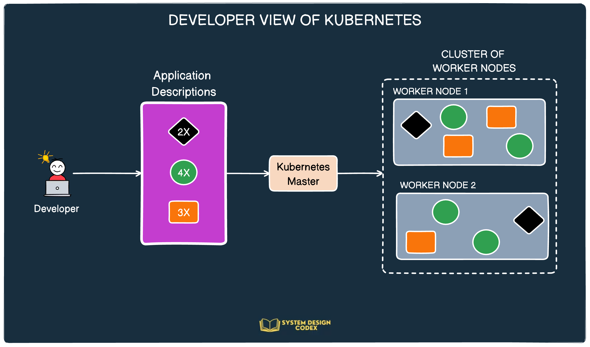
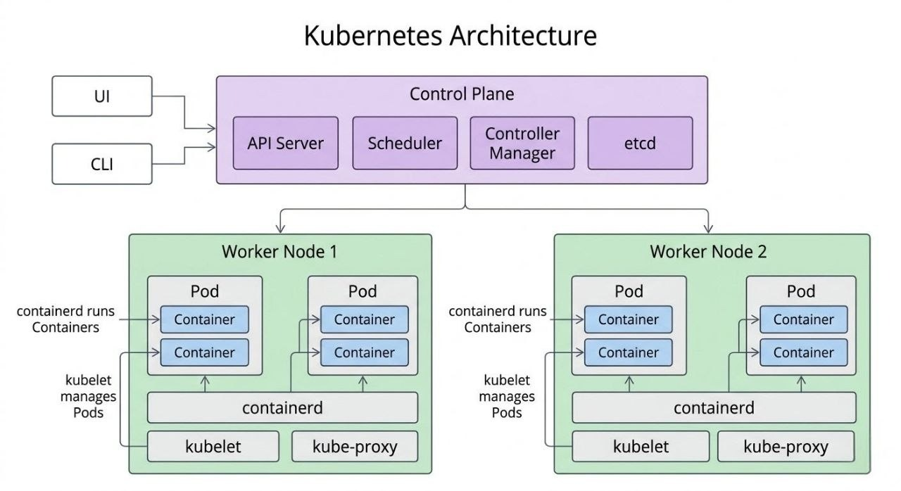
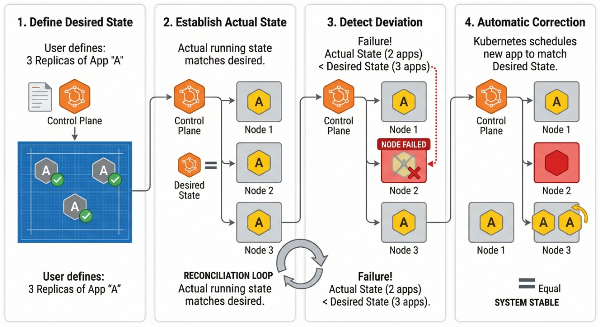
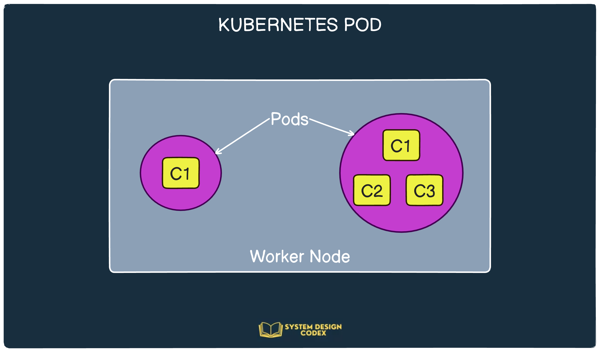
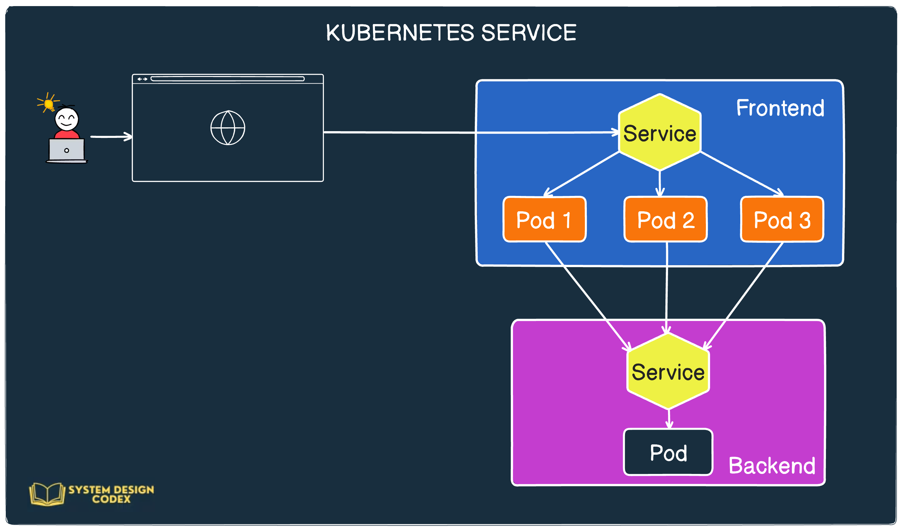
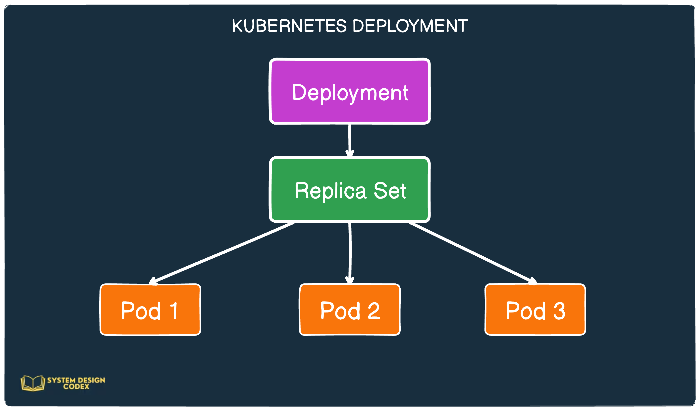
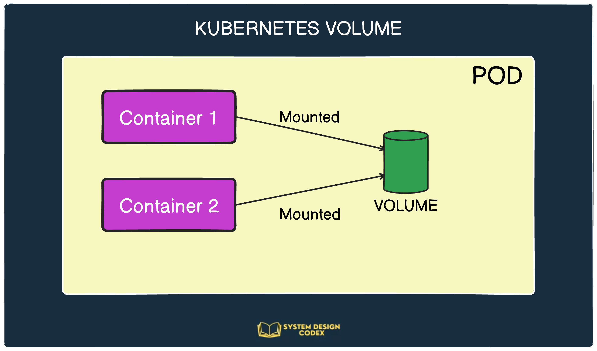

Practical Intro to Kubernetes
The architecture, most important services and more…
notes from Saurabh Dashora's newsletter, Jan 23 2024
What is Kubernetes?
When containerization became popular, everyone adopted it for deploying applications. Soon it was projected as the solution to every developer-life problem.
- Local development issues? Containerize the application.
- Deployment problems? Just deploy your app as a container.
- Can't test your application? Use a container.
However, containers are only one part of the puzzle. Once you have too many containers in a large application, managing them becomes a nightmare. That's where Kubernetes steps in.
How do developers see Kubernetes?
For application developers it's typically a 3-step process:
- STEP 1 – Developers create manifest files for their applications and submit them to Kubernetes.
- STEP 2 – Kubernetes checks those files and deploys the necessary applications to its cluster of worker nodes.
- STEP 3 – Kubernetes manages the complete lifecycle of the applications based on the manifest files.

Developer workflow: manifests in, desired state maintained.
Kubernetes – behind the scenes
Developers rarely need the internals, but you can be tested on this in an interview. A basic understanding of the architecture sets you apart.
Kubernetes is deployed as a cluster with two main parts: the Master Node and Worker Nodes.

Kubernetes architecture: control plane on top, worker nodes below. Diagram: The System Design Newsletter.
Master Node (the manager)
Hosts the Control Plane, the entity that controls the entire cluster.
| Component | Job |
|---|---|
kube-apiserver | Entry point to the K8S cluster. |
scheduler | Assigns a particular deployment to a worker node. |
controller manager | Tracks the nodes and handles failures. |
etcd | Stores the cluster's configuration. |
Worker Nodes (the employees)
Multiple worker nodes are controlled by a single master node. They are the infrastructure pieces that host the containerized applications.
| Component | Job |
|---|---|
| Container runtime | Such as Docker or rkt. |
kubelet | Talks to the API server and manages containers; makes sure the node operates according to the configuration. |
kube-proxy | Communication of pods within the cluster and to the outside network. |
Desired state vs actual state (the big idea)
You don't start apps yourself. You tell Kubernetes what the system should look like, e.g. 3 replicas. That is the desired state. What is currently running is the actual state.
Kubernetes keeps comparing the two. If an app crashes or a node fails, it creates a new one on a healthy node. This ongoing check-and-fix is the reconciliation loop, and it is what makes Kubernetes self-healing.

Reconciliation loop. Diagram: The System Design Newsletter.
Control plane in depth
The control plane has five components. Components never talk to each other directly. They all read and update state through the API server.
| Component | What to remember |
|---|---|
kube-apiserver | Central hub and the only entry point from outside (kubectl sends HTTPS requests to it). Does authentication, then authorization, notifies components of changes, and is the only one that reads/writes etcd. Traffic is encrypted with TLS. |
etcd | Distributed key-value store and the single source of truth: Pods, Deployments, Services, Nodes, ConfigMaps, Secrets. Lose it and the cluster loses its state, so back it up regularly. Backups enable cluster recovery. |
kube-scheduler | Picks the node for a Pod; it doesn't run it. Watches for unassigned Pods, filters out unfit nodes (not enough CPU/memory/GPU, under maintenance), scores the rest, then writes the chosen node to the Pod via the API server. The kubelet on that node runs it. |
kube-controller-manager | Runs many controllers as control loops that compare actual vs desired state via the API server and correct drift. Enables self-healing, auto-scaling and rolling updates. |
cloud-controller-manager | Connects Kubernetes to the cloud provider (load balancers, storage volumes, VMs for nodes). Keeps cloud-specific logic out of core code, so Kubernetes stays cloud-agnostic (AWS, GCP, Azure, on-prem). |
Built-in controllers
| Node | Detects node failures and responds. |
| Replication | Keeps the right number of Pod replicas running. |
| Deployment | Handles rolling updates and keeps Deployments at desired state. |
| Endpoint | Updates a Service's endpoints when Pods change. |
| Namespace | Manages namespace lifecycle and cleanup. |
| Service Account | Creates and manages service accounts and tokens. |
| Job | Ensures jobs complete successfully. |
Extra concepts from "Kubernetes Architecture" in The System Design Newsletter (Neo Kim, guest author Ayaan). Kubernetes itself descends from Google's internal system, Borg.
Top resources · 1 – Pods
Of the many Kubernetes resources, these 4 are the most used and important. Pods are the smallest atomic unit you create in Kubernetes.
Aren't pods the same as a container? Not exactly. Kubernetes groups multiple containers into a single unit known as a Pod, deployed on the worker nodes.

A pod: containers + volumes in one execution environment.
In the animal kingdom, a pod is a group of whales, which fits the whale theme of Docker. A pod is a collection of containers and volumes running within the same execution environment: closely related processes can share resources yet stay isolated from each other.
Every Kubernetes resource is described using a manifest file. A very simple pod:
apiVersion: v1
kind: Pod
metadata:
name: basic-pod-demo
spec:
containers:
- image: systemdesigncodex/nodejs-demo
name: hello-servicekindis the type of resource.metadata.nameis the name of the pod.specgives the containers in the pod. Here one container using the imagesystemdesigncodex/nodejs-demo.- Lastly, the name of the container.
Use kubectl to create the resource and check its status:
$ kubectl apply -f <file-name>.yaml
$ kubectl get po2 – Services
Kubernetes is an ideal platform for microservices, usually one microservice per pod. But microservices need to talk to each other, so pods need a way to find other pods. Services are the life savers.
Example: a frontend web app and a backend database server. The frontend runs on multiple pods for horizontal scalability; the database runs on a single pod. Two requirements:
- External clients must reach the frontend pods without caring about pod IPs.
- Frontend pods must reach the database even if it moves around the cluster and its IP changes, with no reconfiguring.
One Service for the frontend pods gives a constant IP for external clients and acts as a load balancer across instances. Another Service for the database pod gives a stable address that doesn't change when the pod moves (failures, restarts).

Big-picture view of a Kubernetes Service.
apiVersion: v1
kind: Service
metadata:
name: basic-service
spec:
ports:
- port: 80
targetPort: 3000
selector:
app: hello-serviceport is the service port. targetPort is the port exposed by your application container, e.g. a web server running on 3000.3 – Deployment
A Deployment is a higher-level resource for deploying applications and updating them declaratively. Creating one also creates a ReplicaSet under the hood to control the pods.
What does a ReplicaSet do? It lets you create multiple pods for the same application, i.e. horizontal scaling. The Deployment sits on top, making sure the latest version of your app runs on the desired number of pods.

Deployment → ReplicaSet → Pods.
apiVersion: apps/v1
kind: Deployment
metadata:
labels:
app: nginx
name: nginx
spec:
replicas: 3
selector:
matchLabels:
app: nginx
template:
metadata:
labels:
app: nginx
spec:
containers:
- image: progressivecoder/nginx
name: nginx
ports:
- containerPort: 80replicas tells Kubernetes how many pods to create for the nginx container. The rest is similar to the pod YAML.
4 – Volume
Volumes are a component of a pod, not a standalone object. Think of them as storage.
Containers run inside a pod, and if a container goes down its file system is wiped. The new container doesn't see what the previous one wrote, even in the same pod. A volume's contents persist across container restarts and can be accessed by all containers in the pod.

A volume shared across containers in a pod.
You declare volumes in the Pod YAML or Deployment YAML. Example: adding a volume to a Deployment.
apiVersion: apps/v1
kind: Deployment
metadata:
labels:
app: nginx
name: nginx
spec:
replicas: 1
selector:
matchLabels:
app: nginx
template:
metadata:
labels:
app: nginx
spec:
containers:
- image: systemdesigncodex/sidecar
name: sidecar
env:
- name: STATIC_SOURCE
value: https://raw.githubusercontent.com/dashsaurabh/sidecar-demo/master/index.html
volumeMounts:
- name: shared-data
mountPath: /usr/share/nginx/html
- image: systemdesigncodex/nginx
name: nginx
ports:
- containerPort: 80
volumeMounts:
- name: shared-data
mountPath: /usr/share/nginx/html/
volumes:
- name: shared-data
emptyDir: {}- The
volumessection at the bottom declares anemptyDirvolume, which starts as an empty directory, named shared-data. - Apps in the pod can write any files they need into it.
- Here it shares files between the sidecar and nginx containers.
shared-datais mounted at/usr/share/nginx/htmlviavolumeMountsin both containers, so they share the data.- When the pod is destroyed, the volume is destroyed with it.
Conclusion
A brief practical introduction to what Kubernetes is, how it works under the hood, and the most basic resources you can create.
- 1Pod – smallest unit; containers + volumes, ideally 1 container
- 2Service – stable address and load balancing for pods
- 3Deployment – declarative updates; creates a ReplicaSet
- 4Volume – storage shared by a pod's containers
Sources & credits
These are my personal study notes. The content and diagrams come from the articles below. All credit goes to their authors; please read the originals and subscribe.
- Practical Intro to Kubernetes (SDC#25), System Design Codex by Saurabh Dashora. Source of the main structure, YAML examples and the workflow, pod, service, deployment and volume diagrams (made on Eraser.io).
- Kubernetes Architecture, The System Design Newsletter by Neo Kim, with guest author Ayaan. Source of the architecture and reconciliation loop diagrams and the control plane concepts.
- Page design inspired by the Reel Studio Kit post on getanimo.io.
Diagrams and original text © their respective authors. Shared here for personal learning, not for commercial use.
Sources: System Design Codex · The System Design Newsletter